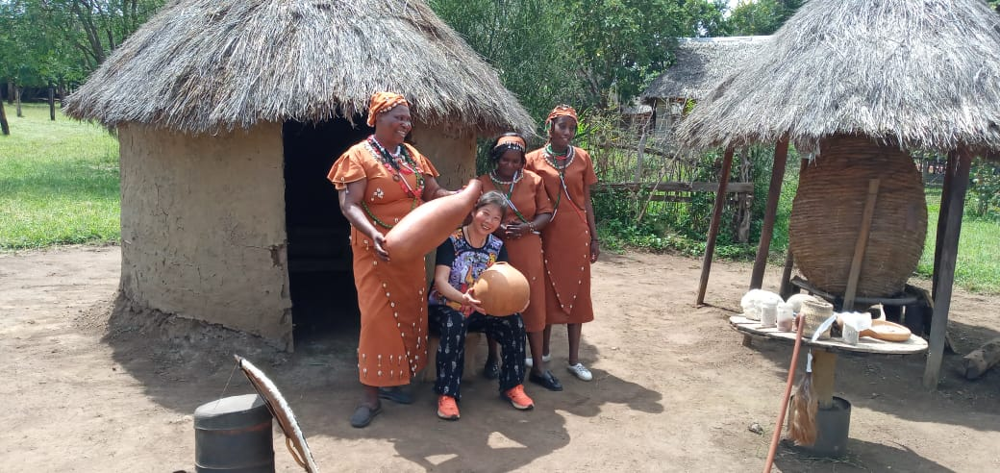
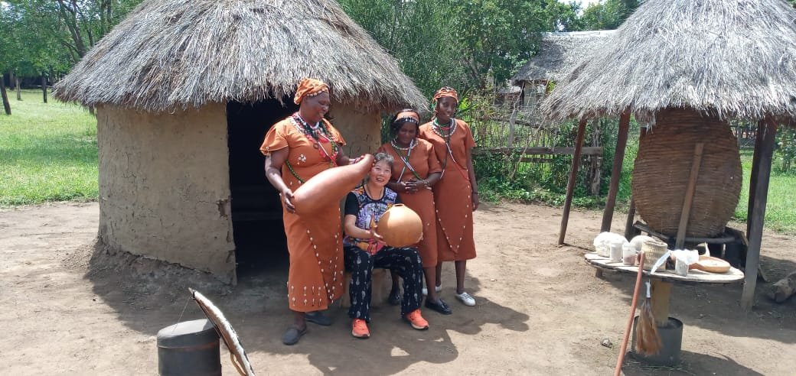
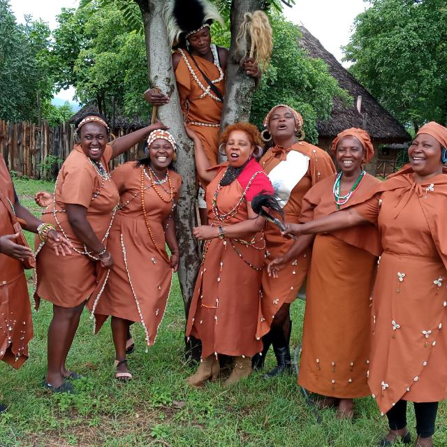
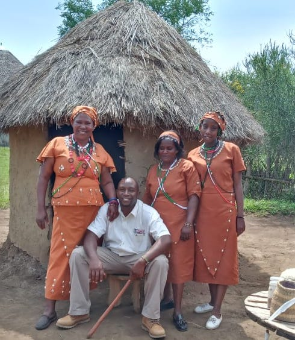

A multicultural village demonstrating traditional life of Bantus around Mount Kenya namely Ameru, Aembu/Ambeere,Agikuyu and Akamba.
Here at Thingira Cultural Village we will take you on journey that will make you feel like you have gone back hundreds of years ago form the homestead,cuisine,traditional dances among other exciting activities.
Set amongst the pristine bushveld and rocky hill on a 20 acre piece of land,located along the Tana river,in Sagana one hour drive from Nairobi along Nyeri/Nairobi highway at the intersection of four district-Kirinyaga,Muranga,Embu and Machakos.
Those planning to have othoni (ngurario)feel free to talk to us @ thingira cultural village for traditional attires, ucuru wa mukio , muratina, ciondo, traditional dancers,Kikuyu comedians, artifacts for deco or anything cultural related we shall provide.
Would you like to find out what these tablets were used for? We have these and many more to explore Schedule a visit today
You might think these are decoration vessels, but they are skillfull crafted and have deep roots into the Bantu way of life. You will be astonished by the amount of history they carry
Come and experience the ancient bantu architecture. The ingenious ways the bantus designed and built different structures to serve different purposes in their homesteads.
Are you a tour operator, a tour guide or a bird lover ,here is something for you.welcome to thingira cultural village and it environ the home of Hinde's babbler (Turdoides hindei), also known as Hinde's pied-babbler, is a species of bird in the Leiothrichidae family. It is endemic to Kenya. Its natural habitats are subtropical or tropical moist shrubland, arable land, and plantations. It is threatened by habitat loss but here it has found its home plus many more species if birds. Remember to carry your binoculars
I enjoyed visiting thingira, it has excellent customer service. The tour guides are so nice, I generally enjoyed the visit and learnt a lot
What I love about thingira is how you really get to learn and appreciate the life of our forefathers
I loved spending time at thingira with my family and kids. I really wanted my kids to learn more about how their grandparents lived, and thingira did a good a job. My kids seemed more interested to learn about the Bantu culture after the tour
They charge way less compared to what I got to learn and experience. It's an affordable place for anyone who wants to learn more about the traditional Bantu culture